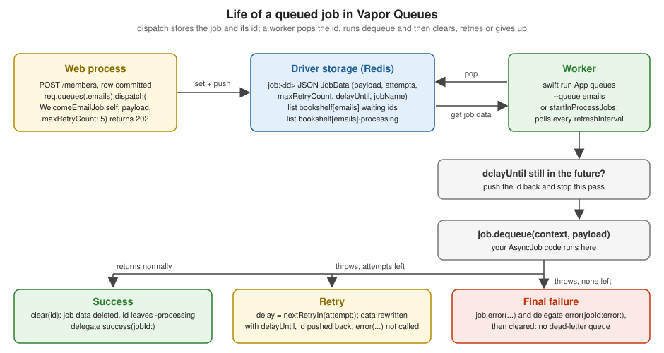

Queues & Background Jobs
|
This content was generated with the assistance of AI and should be verified against the official documentation before being relied on in production. |
This page is written against Vapor 4.122.2 on Swift 6.4 (the package builds in the Swift 6 language mode with tools
version 6.3, as the
official template does; Vapor 4.122.2 itself needs tools version 6.0), with vapor/queues 1.18.0 (2026-03-07),
vapor/queues-redis-driver
1.1.2 (2024-09-19, built on vapor/redis 4.14.0 and RediStack) and the community vapor-queues-fluent-driver 3.2.0
(2026-01-07),
checked on 2026-10-17. Every Swift listing was compiled in the Swift 6 language mode with zero warnings in scratch
packages. The job
logic, retries, backoff, event delegate, named queues and the in-process worker were run in an eight-test VaporTesting
suite on the
asyncTest driver, and the Fluent driver was run for real with SQLite, as a web process and a separate queues worker
process.
No Redis server was available when this page was written (no redis-server binary and no running Docker daemon on the
machine), so
the Redis driver was compiled and its worker was started against a closed port (the failure it prints is shown in
Common errors), but no job was ever stored in Redis. Whatever this page says about what the Redis driver does with
its keys comes
from reading the driver’s source, and is labelled as such. Vapor 5 is at 5.0.0-beta.4 and is not released yet; the
status of Queues
there is in Version notes. The page extends the Bookshelf service of the earlier pages (for example
Fluent Models): registering a member sends
a welcome e-mail, and a loan schedules a reminder, neither of which should make an HTTP request wait. Swift concurrency
is covered by
Async/Await and Tasks and Sendable by
Actors, Isolation and Sendable; the Redis server
itself, and the
Cache and Redis client that share a connection URL with the queue driver, are on
Redis & Caching and the Redis section. The
same topic in
Rust is on Background Jobs & Tasks with axum. The messaging concepts
behind a queue
(delivery guarantees, brokers) are on Messaging, and time-based work on
Scheduling. Scheduled jobs of Queues (ScheduledJob, --scheduled), e-mail
sending, custom
commands, testing in general and deployment each have their own page (Scheduled
Jobs,
Sending Email, Commands,
Testing and
Deployment with Docker); this page covers the job queue itself.
Why a queue, and what Vapor Queues is
A handler that sends an e-mail (see Sending Email), resizes an image or calls a slow partner API makes the client wait, and loses the work if the request fails half way. Moving that work out of the request has three effects: the response returns fast, the work can be retried when it fails, and the amount of work in flight is limited by the number of workers instead of by the number of requests. The price is a second moving part (the store and the workers) and a different failure model: a job runs later, in another process, possibly more than once.
Vapor Queues (the vapor/queues package) is a small job queue written in Swift on top of SwiftNIO. It gives you:
-
a
Joband anAsyncJobprotocol, with a typedCodablepayload; -
dispatch, to store a job and put it in a named queue, optionally delayed and with a retry budget; -
workers that poll the queue, run the job and retry it on failure, as a separate process (
swift run App queues) or inside the web process (startInProcessJobs); -
a hook protocol (
AsyncJobEventDelegate) andswift-metricsinstrumentation; -
a
QueuesDriverprotocol, so that the storage is replaceable, and a test driver.
What it is not: a message broker. There is no routing, no priorities inside a queue, no dead-letter queue and no exactly-once delivery. When you need those, use a broker (see Messaging and Delivery Guarantees) and consume from it in a Vapor service.
| Need | Use | Why |
|---|---|---|
Work for this request, result needed in the response |
|
The client waits anyway; no queue needed |
Work that can happen after the response, may be lost on a crash (a cache warm-up) |
A detached |
No retry and no record; the task dies with the process |
Work that must happen, may take seconds, may fail (welcome e-mail, push, webhook, image resize) |
A queued job |
Stored before the response, retried, run by workers you size |
Work on a clock (nightly overdue scan) |
A scheduled job, or a Kubernetes CronJob |
The Scheduled Jobs page and the Scheduling section |
Work shared with other services, fan-out, replay |
A broker (Kafka, RabbitMQ) |

Packages and drivers
The official documentation says not to depend on vapor/queues directly unless you are writing a driver: you depend on
a driver
package, which depends on queues. The exception is your test target, which needs the XCTQueues product that only the
queues
package provides (see Testing jobs).
| Driver | Package and version | Notes |
|---|---|---|
Redis (official) |
|
The default choice. Stores one JSON value per job plus a list per queue. Uses |
Fluent (community) |
|
Stores jobs in a SQL table ( |
MongoDB (community) |
|
Listed in the official documentation; its last push on GitHub is January 2023, so check it before relying on it. |
Test |
|
|
queues 1.18.0 declares vapor from 4.104.0, so it builds with Vapor 4.122.2. A Package.swift for the Redis driver
with the test
product:
// swift-tools-version:6.3
import PackageDescription
let package = Package(
name: "Bookshelf",
platforms: [.macOS(.v13)],
dependencies: [
.package(url: "https://github.com/vapor/vapor.git", from: "4.122.2"),
.package(url: "https://github.com/vapor/queues.git", from: "1.18.0"),
.package(url: "https://github.com/vapor/queues-redis-driver.git", from: "1.1.2"),
],
targets: [
.executableTarget(name: "App", dependencies: [
.product(name: "Vapor", package: "vapor"),
.product(name: "Queues", package: "queues"),
.product(name: "QueuesRedisDriver", package: "queues-redis-driver"),
]),
.testTarget(name: "AppTests", dependencies: [
.target(name: "App"),
.product(name: "VaporTesting", package: "vapor"),
.product(name: "XCTQueues", package: "queues"),
]),
]
)Source: Vapor docs: Queues, vapor/queues 1.18.0
Choosing and configuring the driver
The driver is chosen once, in configure, with app.queues.use(_:). QueuesRedisDriver adds .redis(url:), which
throws if the
string is not a valid Redis URL (redis:// or rediss://, optionally with a password and a database number in the
URL). Everything
else that tunes Queues is on app.queues.configuration:
| Setting | Default | Meaning |
|---|---|---|
|
|
Pause between two polling passes of a worker. The next pass starts this long after the previous one finished. An idle queue therefore adds up to this much latency to a job. |
|
|
Number of concurrent workers (each is a loop on one event loop that runs one job at a time). |
|
|
Prefix of the Redis list names. A queue called |
The complete configure of the Bookshelf scratch project, used by the rest of this page:
import Queues
import QueuesRedisDriver
import Vapor
func configure(_ app: Application, retryBaseSeconds: Int = 30) async throws {
// 1. Driver. Tests choose their own driver, so the production one is skipped there.
if app.environment != .testing {
let url = Environment.get("REDIS_URL") ?? "redis://127.0.0.1:6379"
try app.queues.use(.redis(url: url))
}
// 2. Tuning.
app.queues.configuration.refreshInterval = .seconds(1)
app.queues.configuration.persistenceKey = "bookshelf"
app.queues.configuration.workerCount = 2
// 3. Every job type must be registered, in the web process and in the worker process.
app.queues.add(WelcomeEmailJob(retryBaseSeconds: retryBaseSeconds))
app.queues.add(LoanReminderJob())
// 4. Monitoring.
app.queues.add(JobAuditDelegate(logger: app.logger, stats: app.jobStats))
// 5. Optional in-process workers, for small deployments and local development.
if Environment.get("QUEUES_IN_PROCESS") == "true" {
try app.queues.startInProcessJobs(on: .emails)
try app.queues.startInProcessJobs(on: .reminders)
}
try routes(app)
}
extension Application {
private struct JobStatsKey: StorageKey { typealias Value = JobStats }
var jobStats: JobStats {
if let existing = storage[JobStatsKey.self] { return existing }
let stats = JobStats()
storage[JobStatsKey.self] = stats
return stats
}
}Three details of that listing matter:
-
Register every job in every process. The job registry lives in memory. The web process only needs the types it dispatches, but the worker process, which is the same binary started with a different command, must know every job that can reach it. Putting
app.queues.addinconfiguredoes both. -
Tests skip the production driver.
app.environment != .testingleaves the choice to the test (see Testing jobs); without that, the tests would try to reach Redis. -
The Redis URL is configuration, not code. Read it from the environment (see Configuration & Environment). A
rediss://URL turns on TLS, and a password goes in the URL or in theRedisConfiguration, never in the source.
The Redis driver opens one connection pool and shares it between all its workers. The default of vapor/redis is at
most two
simultaneous connections (.maximumActiveConnections(2)), and connectionRetryTimeout is nil by default. With the
default
workerCount on a many-core machine, size the pool and set a timeout (so that an unreachable Redis fails instead of
waiting) with the
RedisConfiguration overload:
import Queues
import QueuesRedisDriver
import Vapor
/// The same driver with an explicit pool, a connection timeout and TLS taken from a `rediss://` URL.
func makeRedisQueuesProvider() throws -> Application.Queues.Provider {
let url = Environment.get("REDIS_URL") ?? "redis://127.0.0.1:6379"
let configuration = try RedisConfiguration(
url: url,
pool: .init(
maximumConnectionCount: .maximumActiveConnections(8),
minimumConnectionCount: 1,
connectionRetryTimeout: .seconds(5)))
return .redis(configuration)
}Source: queues-redis-driver 1.1.2: JobsRedisDriver.swift, vapor/redis 4.14.0: RedisConfiguration.swift
Use it as try app.queues.use(makeRedisQueuesProvider()). The Queues driver and the app.redis client of the Redis
package are separate
pools, even when they point at the same server.
The Fluent driver
If the service already has a SQL database and no Redis, jobs can live in a table. The listing below is the whole configuration of the scratch project in which the Fluent driver was run (SQLite for the scratch project; use Postgres or MySQL for real work):
import Fluent
import FluentSQLiteDriver
import Queues
import QueuesFluentDriver
import Vapor
struct PingPayload: Codable, Sendable {
let message: String
}
struct PingJob: AsyncJob {
typealias Payload = PingPayload
func dequeue(_ context: QueueContext, _ payload: PingPayload) async throws {
context.logger.info("PingJob ran", metadata: ["message": "\(payload.message)"])
}
}
func configure(_ app: Application) async throws {
// The database must be registered before the queues driver.
app.databases.use(.sqlite(app.environment == .testing ? .memory : .file("queues.sqlite")), as: .sqlite)
// The jobs table, created by `migrate` like any other table.
app.migrations.add(JobModelMigration())
app.queues.use(.fluent(preservesCompletedJobs: true))
app.queues.configuration.workerCount = 1
app.queues.configuration.refreshInterval = .milliseconds(200)
app.queues.add(PingJob())
app.post("ping") { req async throws -> HTTPStatus in
try await req.queue.dispatch(PingJob.self, PingPayload(message: "hello from the web process"))
return .accepted
}
}The driver needs the database registered before app.queues.use(.fluent()), and a migration for the jobs table (see
Migrations & Schema). swift run App migrate --auto-migrate created this
table:
CREATE TABLE "_jobs_meta" ("id" TEXT PRIMARY KEY, "queue_name" TEXT NOT NULL, "job_name" TEXT NOT NULL,
"queued_at" TIMESTAMP NOT NULL, "delay_until" TIMESTAMP DEFAULT NULL, "state" varchar(16) NOT NULL,
"max_retry_count" INTEGER NOT NULL, "attempts" INTEGER NOT NULL, "payload" BLOB NOT NULL, "updated_at" TIMESTAMP NOT NULL);The web process and the worker were then started as two processes against the same file, with one curl in between:
$ swift run App serve --port 8091 &
$ curl -i -X POST localhost:8091/ping
HTTP/1.1 202 Accepted
$ sqlite3 queues.sqlite "select state, job_name, queue_name from _jobs_meta"
pending|PingJob|default
$ swift run App queues
[ INFO ] Starting jobs worker [queue: default]
[ INFO ] Dequeing and running job [attempt: 1, job-id: BFDD4B83-D248-465C-8E47-4BD5D6865013, job-name: PingJob, queue: default, retries-left: 0]
[ INFO ] PingJob ran [job_id: BFDD4B83-D248-465C-8E47-4BD5D6865013, message: hello from the web process, queue: default]
$ sqlite3 queues.sqlite "select state, job_name from _jobs_meta"
completed|PingJobCompared with Redis, the table gives you something to query and to repair by hand (a job is a row with a state), jobs
that survive
a Redis flush, and the same backup as the rest of your data. It costs a polling query per worker per refreshInterval
on your primary
database, so raise refreshInterval and lower workerCount for it. preservesCompletedJobs: true keeps finished rows
(nothing
deletes them afterwards, so add a clean-up). The driver is a community package: its Vapor 5 status is unknown, and it is
a dependency
to review before adopting.
Defining a job
A job is a value (a struct, usually without stored state) that conforms to AsyncJob, with a Payload type that is
Codable and
Sendable:
| Member | Role |
|---|---|
|
The data of one run, serialised to JSON by default ( |
|
The work. Returning means success; throwing means failure. |
|
Called once, after the last attempt has failed. Optional; the default does nothing. |
|
Seconds to wait before the next try after a failure; |
|
The identifier stored with every job; the default is |
Job is the older, EventLoopFuture-returning protocol, and AsyncJob refines it with async versions of dequeue
and error
(the futures versions are forwarded to them). Use AsyncJob; Job remains for code that predates async/await and is
not shown here.
QueueContext is what a job gets instead of a Request, because there is no request: it carries the application (and
through it
every service, database and client), a logger already tagged with the queue name and the job id, the queueName, the
configuration,
and the eventLoop. It also gives context.queue and context.queues(_:), so a job can dispatch a follow-up job.
import Foundation
import Queues
import Vapor
struct WelcomeEmail: Codable, Sendable {
let memberID: UUID
let email: String
let name: String
}
struct WelcomeEmailJob: AsyncJob {
typealias Payload = WelcomeEmail
/// A stable name: renaming the Swift type must not orphan jobs already waiting in Redis.
static var name: String { "welcome-email" }
/// Seconds before the first retry; each further retry doubles it (capped at 15 minutes).
var retryBaseSeconds = 30
func dequeue(_ context: QueueContext, _ payload: WelcomeEmail) async throws {
let key = "welcome-\(payload.memberID)"
let ledger = context.application.sentLedger
guard await !ledger.contains(key) else {
context.logger.info("Welcome email already sent, skipping", metadata: ["key": "\(key)"])
return
}
try await context.application.emailSender.send(OutgoingEmail(
to: payload.email,
subject: "Welcome to Bookshelf, \(payload.name)",
body: "Your account is ready.",
idempotencyKey: key))
await ledger.record(key)
}
func error(_ context: QueueContext, _ error: any Error, _ payload: WelcomeEmail) async throws {
// Called once, after the last attempt failed. Park it where a human or a repair job will look.
context.logger.error("Welcome email gave up", metadata: [
"member": "\(payload.memberID)", "error": "\(error)",
])
}
func nextRetryIn(attempt: Int) -> Int {
guard retryBaseSeconds > 0 else { return 0 }
return min(retryBaseSeconds << (attempt - 1), 15 * 60)
}
}
struct LoanReminder: Codable, Sendable {
let loanID: UUID
let email: String
let title: String
}
struct LoanReminderJob: AsyncJob {
typealias Payload = LoanReminder
func dequeue(_ context: QueueContext, _ payload: LoanReminder) async throws {
try await context.application.emailSender.send(OutgoingEmail(
to: payload.email,
subject: "\"\(payload.title)\" is due tomorrow",
body: "Please return it or renew the loan.",
idempotencyKey: "reminder-\(payload.loanID)"))
}
}
extension QueueName {
/// Everything that sends mail: its own queue, so a backlog never delays the others.
static let emails = QueueName(string: "emails")
/// Reminders are processed strictly one at a time.
static let reminders = QueueName(string: "reminders", workerCount: 1)
}Points worth stating about that listing:
-
The payload holds identifiers and the minimum to act on, not objects.
WelcomeEmailcarries the member id, the address and the name rather than aMembermodel. The payload is stored as plain JSON in Redis (or in a table), so anything you put there is readable by anyone with access to the store: no passwords, tokens or other secrets, and think twice about personal data (the e-mail address here is the minimum needed). When the data may have changed by the time the job runs, carry the id and load the row indequeue. -
The Swift 6 constraints are enforced by the compiler.
AnyJobisSendable, so a job struct cannot hold mutable state, andPayloadmust beSendable. A job reaches shared services throughcontext.application(the pattern of Services, Storage & Dependency Injection) and keeps cross-run state in anactoror a database, never in a storedvar. -
static var nameis a decision you should make explicitly. The name is written into every stored job, and the worker looks the job up by it. Renaming the Swift type without pinning the name makes jobs already in the queue unrunnable: the worker logsNo job with the desired name is registered, discardingand deletes them. -
The
errorhook is the only place to record a permanent failure. The queue has no dead-letter list: after the last failed attempt the job data is deleted. The hook (and the event delegate below) is where a row in afailed_jobstable, a log line with the member id, or an alert belongs. -
The
nextRetryInshown is exponential backoff: with a base of 30 seconds the delays are 30, 60, 120, 240 and so on, capped at fifteen minutes. AretryBaseSecondsof zero means no delay, which tests use.
When the payload is not Sendable or not Codable the compiler says so (messages from the scratch project):
error: type 'ResizeJob.Payload' (aka 'ResizePayload') does not conform to the 'Sendable' protocol
error: type 'ResizePayload' does not conform to protocol 'Decodable'
error: type 'PlainJob' does not conform to protocol 'Job'The first is a payload that holds a class (final class Cover { var path = "" }); the last is a payload that is not
Codable
without custom serializePayload/parsePayload.
Registering and dispatching
app.queues.add(_:) registers a job instance and must run for each job type before the application starts (the listing
does it in
configure). Registering the same name twice replaces the first and logs a warning. Dispatching a job that is not
registered does
not fail: the job is stored, and the worker discards it with the warning above, so a typo in the registration shows up
as jobs that
silently vanish.
dispatch stores the job data and then pushes its id onto the queue. Its signature, copied from the source:
func dispatch<J: Job>(
_ job: J.Type,
_ payload: J.Payload,
maxRetryCount: Int = 0,
delayUntil: Date? = nil,
id: JobIdentifier = .init()
) async throwsYou reach a queue from a request with req.queue (the default queue) or req.queues(_:) (a named one), and from
anywhere else with
app.queues.queue and app.queues.queue(_:), for instance in a command or in another job. The routes of the scratch
project:
import Queues
import Vapor
struct RegisterMember: Content {
let email: String
let name: String
}
struct LoanRequest: Content {
let email: String
let title: String
let dueDate: Date
}
func routes(_ app: Application) throws {
app.post("members") { req async throws -> HTTPStatus in
let input = try req.content.decode(RegisterMember.self)
let memberID = UUID()
// ... save the member with Fluent first; dispatch only after the row is committed.
try await req.queues(.emails).dispatch(
WelcomeEmailJob.self,
WelcomeEmail(memberID: memberID, email: input.email, name: input.name),
maxRetryCount: 5,
id: JobIdentifier(string: "welcome-\(memberID)"))
return .accepted
}
app.post("loans") { req async throws -> HTTPStatus in
let input = try req.content.decode(LoanRequest.self)
let reminderAt = input.dueDate.addingTimeInterval(-24 * 60 * 60)
try await req.queues(.reminders).dispatch(
LoanReminderJob.self,
LoanReminder(loanID: UUID(), email: input.email, title: input.title),
maxRetryCount: 3,
delayUntil: reminderAt)
return .accepted
}
}Behaviour that the handlers rely on, each verified in the test suite:
-
dispatchreturns as soon as the job is stored, so the handler answers202 Acceptedwhile the e-mail has not been sent yet. The test asserts exactly that: after the request,app.queues.asyncTest.contains(WelcomeEmailJob.self)is true and the fake sender has recorded nothing. -
Dispatch after the data is committed. If the handler dispatches inside a database transaction that later rolls back, the job runs for a member that does not exist; if it dispatches before the commit, a fast worker can run before the row is visible. Do the dispatch after the commit (see Transactions, Model Middleware & Soft Delete); the reverse failure (committed, then the dispatch fails) is the case the retry and the idempotency below cannot cover, so a reliable system adds a periodic repair job that finds rows without their e-mail. That is the cost of having two stores, a database and a queue, with no shared transaction.
-
A custom
idis not a deduplication key. The listing usesJobIdentifier(string: "welcome-\(memberID)")so that logs and metrics can be matched to the member. Dispatching twice with the same id stores the data once (the second write overwrites the first) but pushes the id twice. The test shows the consequence: the queue holds two entries and one data record, the first pop runs the job and deletes the record, and the second pop throws (NoSuchJobErroron the test driver; the Redis driver throws itsmissingJoberror, per its source). Dedupe with a unique database constraint instead. -
maxRetryCountis the number of retries, somaxRetryCount: 2is three attempts in total (tested: three calls to the sender, thenerror). The default0means a failure is final. -
Dispatching from a request needs an
await. The official page shows some examples withouttry await, but theasyncoverload returns a value that must be awaited, and the compiler will tell you.
Named queues and priorities
A QueueName is a string that selects a separate list in the store. There are no priorities inside a queue: it is
first in, first
out. What the documentation calls priorities is the ability to route different kinds of work to different queues and
give each its own
workers:
extension QueueName {
/// Everything that sends mail: its own queue, so a backlog never delays the others.
static let emails = QueueName(string: "emails")
/// Reminders are processed strictly one at a time.
static let reminders = QueueName(string: "reminders", workerCount: 1)
}The optional workerCount caps the number of workers for that queue, whatever the global setting: the effective
number is the
smaller of the two, and 1 makes the queue strictly sequential (useful when order matters, or when the job talks to
something that
cannot take parallel callers). A queue name without a count uses the global one. Queues and workers are matched when you
start the
worker, not when you dispatch: a job sent to a queue nobody serves waits there forever, and Queues does not warn about
it.
| Goal | How |
|---|---|
Keep e-mail from blocking image processing |
Two queues, a worker process per queue |
Give urgent work precedence |
A separate queue with its own workers (more of them, or a lower |
Process one account’s jobs in order |
Not provided; use a queue with |
Limit parallel calls to a rate-limited API |
A queue with a small |
Running workers
Dispatching only stores jobs. Nothing runs them until a worker is started, and Queues does not tell you when none is:
the official
page carries a warning that jobs do not run unless you start a worker, on the command line or in process.
As a separate process
The queues command is registered by Queues itself, and works with the same binary and the same configure as the web
server:
swift run App queues # the default queue
swift run App queues --queue emails # one named queue
swift run App queues --scheduled # the scheduler instead (scheduled-jobs page)swift run App queues --help prints (the path in the first line shortened):
Usage: App queues [--queue] [--scheduled]
Starts the Vapor Queues worker
Options:
queue Specifies a single queue to run
Flags:
scheduled Runs the scheduled queue jobsOne worker process serves one queue: to serve emails and reminders you start two processes (or use the in-process
option below). In
production the command is a long-running service, run like the web server by systemd, a container or a Kubernetes
Deployment
(see Deployment shapes). It handles SIGTERM and SIGINT: the scratch worker, sent SIGTERM, stopped polling and
exited. What happens to a job that is
running at that moment was not verified, so write jobs that can safely run again (see
Retries, failures and idempotency).
Inside the web process
For a small deployment, or while developing, workers can run in the server process:
try app.queues.startInProcessJobs(on: .emails)
try app.queues.startInProcessJobs(on: .reminders)Call it once per queue; each call starts the number of workers that queue is configured for. The listing in configure
does it
when QUEUES_IN_PROCESS is true. The test suite runs the same call against the test driver.
Separate queues process |
In-process (startInProcessJobs) |
|
|---|---|---|
Scale |
Workers and web servers scale independently |
Every web replica also runs workers |
Isolation |
A slow or crashing job cannot take the web server down; a deployment can restart workers alone |
Jobs share the event loops, memory and fate of the web server |
CPU-heavy jobs |
Run them on a dedicated, larger or smaller machine |
Compete with request handling |
Operations |
One more service to run and monitor |
Nothing extra |
Good for |
Production |
Development, tests, and small single-instance services |
A worker is a loop pinned to one event loop that runs refreshInterval after the previous pass finished: it pops jobs
one at a time
until the queue is empty, then sleeps. So a worker runs one job at a time, dequeue is async and does not block the
event loop while
it awaits, and the concurrency of a queue is its worker count. A long job occupies a worker for its whole duration; do
not run
thread-blocking work (a synchronous library call) in dequeue without moving it off the event loop.
Delayed jobs and the head of the queue
delayUntil is implemented by the worker, not by the store. When a worker pops a job whose time has not come, it pushes
the id back
onto the queue and ends the pass. Two consequences, both measured in the test suite, which dispatched three jobs
delayed by an hour
followed by one ready job:
the ready job ran on pass 4-
Delayed jobs are polled, not parked. A job delayed by two weeks is popped and re-pushed on every pass of every worker for two weeks.
-
Delayed jobs ahead of ready ones slow them down. Each pass gets past one delayed job, so a ready job behind three delayed ones waits for four passes, which at the default
refreshIntervalis four seconds, and a hundred delayed reminders would hold ready jobs up for minutes.
Use delayUntil for short delays (a retry, "in five minutes"). For "remind the member the day before the loan is due",
do not queue a
job fourteen days ahead as the /loans route above does for illustration: store the due date in the database and let a
scheduled job
find the loans due tomorrow once a day (the Scheduled Jobs page), which also
survives a Redis flush and lets a
returned book cancel its reminder.
Retries, failures and idempotency
The worker’s behaviour when dequeue throws, read from QueueWorker.swift and confirmed by the tests:
| Situation | What happens |
|---|---|
|
The job data is deleted, the id leaves the queue, delegates get |
|
|
|
The job’s |
The job’s name is not registered |
Warning in the log, job deleted |
Delay not over |
Id pushed back, the pass ends (see above) |
The worker process dies during |
See below |
Because a job can run more than once, make it idempotent: running it twice must have the effect of running it once.
Retries cause
the repeat when dequeue does part of its work and then throws (the e-mail was sent, then the database write failed),
and an
operator who requeues a stuck job causes it too. The usual tools, in order of strength:
-
A natural key: the operation is itself idempotent (
UPDATE loans SET reminded = true, an upsert). -
A record of completion, checked before and written after: the listing keeps a
SentLedger, an in-memoryactorin the scratch project, so the second run logsWelcome email already sent, skippingand sends nothing (tested: two identical jobs, one e-mail). In a real service the ledger is a table with a unique constraint on the key, written in the same transaction as the side effect when the side effect is a database change. -
The provider’s idempotency key: pass the same key (the listing passes
idempotencyKeyinOutgoingEmail) on every attempt, for providers that support one, so the provider deduplicates what a ledger cannot (the crash between "sent" and "recorded").
The remaining gap, between sending and recording, is inherent: you can choose to risk a duplicate (check, send, record: what the listing does) or a loss (record, send), and for e-mail a duplicate is the safer error.
What a crash does (Redis driver, from the source)
The Redis driver’s pop is RPOPLPUSH: it atomically moves the id from the queue list bookshelf[emails] to a second
list,
bookshelf[emails]-processing, and clear removes it from there when the job finishes or fails for good. This is the
"reliable
queue" pattern, and it means a worker that dies between the pop and the clear leaves the id in the processing list. I
searched
queues 1.18.0 and queues-redis-driver 1.1.2 for anything that reads the processing list back and found only the
three places
that write to or remove from it, so a job that was running when its worker was killed is not retried automatically:
its data stays
in Redis under job:<id> and its id stays in the processing list until someone moves it back. (This was not run against
a Redis
server; if you depend on it, test it with a real one.) The recovery, with no worker running on that queue, is to look at
the list
and move the ids back to the queue, one LMOVE per id (LMOVE replaces the deprecated RPOPLPUSH):
redis-cli LRANGE 'bookshelf[emails]-processing' 0 -1
redis-cli LMOVE 'bookshelf[emails]-processing' 'bookshelf[emails]' RIGHT LEFTThe job data key is job:<id>, not prefixed by persistenceKey, and dates in it are written as seconds since 1970. The
Fluent driver
keeps the state of each job in a row, which makes the same situation visible with a query.
This is why a queue like this one gives you at-least-once behaviour for failures it can see (an exception) and no guarantee for a process that disappears. Anything needing stronger delivery guarantees belongs on a broker; the Delivery Guarantees page has the vocabulary.
Monitoring jobs
AsyncJobEventDelegate receives four events, all optional (the defaults do nothing). Register one with
app.queues.add(_:):
import Queues
import Vapor
/// Counters kept by the delegate (an actor, because delegates are called from several event loops).
actor JobStats {
private(set) var dispatched = 0
private(set) var dequeued = 0
private(set) var succeeded = 0
private(set) var failed = 0
func didDispatch() { dispatched += 1 }
func didDequeue() { dequeued += 1 }
func didSucceed() { succeeded += 1 }
func didFail() { failed += 1 }
}
struct JobAuditDelegate: AsyncJobEventDelegate {
let logger: Logger
let stats: JobStats
func dispatched(job: JobEventData) async throws {
await stats.didDispatch()
logger.info("job dispatched", metadata: [
"job": "\(job.jobName)", "id": "\(job.id)", "queue": "\(job.queueName)",
])
}
func didDequeue(jobId: String) async throws {
await stats.didDequeue()
}
func success(jobId: String) async throws {
await stats.didSucceed()
logger.info("job succeeded", metadata: ["id": "\(jobId)"])
}
func error(jobId: String, error: any Error) async throws {
await stats.didFail()
logger.error("job failed for good", metadata: ["id": "\(jobId)", "error": "\(error)"])
}
}| Callback | Called |
|---|---|
|
By |
|
Each time a worker picks the job up, so once per attempt (tested: three for a job that failed twice and then succeeded) |
|
When |
|
Once, after the last failed attempt; not on a retry |
A delegate that throws is logged as Failed to send notification and otherwise ignored, so monitoring cannot break job
processing.
The delegate must be Sendable and is called from whichever event loop runs the job, hence the actor for the
counters.
Queues also reports to swift-metrics, so any metrics backend you have bootstrapped (Prometheus, OpenTelemetry)
receives these from
the source of QueueWorker and dispatch (see Tracing,
Metrics & OpenTelemetry for bootstrapping a backend; queues do not propagate trace context, so carry a traceparent
value in the payload if you need it):
| Metric | Kind | Dimensions |
|---|---|---|
|
counter |
|
|
counter |
|
|
counter |
|
|
meter |
|
|
timer |
|
The most useful alerts are the age of the oldest job in each queue (how late the work is) and the length of each queue,
which Queues
does not export: read them from Redis (LLEN 'bookshelf[emails]') or the jobs table with a small scheduled probe.
Testing jobs
The general test setup is on the Testing page. XCTQueues provides .asyncTest (and
.test for the futures-based Job), a driver that keeps jobs in memory. The name XCTQueues
is historical: it works with Swift Testing. Two rules make queue tests deterministic: select the driver before
configure, and do not
start any worker; call app.queues.queue.worker.run() yourself to run everything that is ready, in the test’s own task.
import Foundation
import Queues
import Testing
import VaporTesting
import XCTQueues
@testable import App
/// Fake provider: fails the first `failures` calls, records the rest.
actor RecordingEmailSender: EmailSender {
private(set) var sent: [OutgoingEmail] = []
private(set) var attempts = 0
private var failuresLeft: Int
struct Outage: Error {}
init(failures: Int = 0) { failuresLeft = failures }
func send(_ message: OutgoingEmail) async throws {
attempts += 1
if failuresLeft > 0 {
failuresLeft -= 1
throw Outage()
}
sent.append(message)
}
}
func withApp(
sender: RecordingEmailSender = RecordingEmailSender(),
retryBaseSeconds: Int = 0,
_ body: (Application) async throws -> Void
) async throws {
let app = try await Application.make(.testing)
do {
app.queues.use(.asyncTest)
app.emailSender = sender
try await configure(app, retryBaseSeconds: retryBaseSeconds)
try await body(app)
} catch {
try await app.asyncShutdown()
throw error
}
try await app.asyncShutdown()
}
@Suite struct QueueTests {
@Test func registrationDispatchesAJobWithoutSendingMail() async throws {
let sender = RecordingEmailSender()
try await withApp(sender: sender) { app in
try await app.testing().test(.POST, "members", beforeRequest: { req in
try req.content.encode(RegisterMember(email: "ada@example.com", name: "Ada"))
}, afterResponse: { res async in
#expect(res.status == .accepted)
})
// The handler only enqueued the job.
#expect(app.queues.asyncTest.contains(WelcomeEmailJob.self))
let payload = try #require(app.queues.asyncTest.first(WelcomeEmailJob.self))
#expect(payload.email == "ada@example.com")
#expect(await sender.sent.isEmpty)
// Drain the queue the way a worker does.
try await app.queues.queue.worker.run()
#expect(await sender.sent.count == 1)
#expect(app.queues.asyncTest.queue.isEmpty)
}
}
@Test func aTransientFailureIsRetried() async throws {
let sender = RecordingEmailSender(failures: 2)
try await withApp(sender: sender) { app in
let payload = WelcomeEmail(memberID: UUID(), email: "ada@example.com", name: "Ada")
try await app.queues.queue.dispatch(WelcomeEmailJob.self, payload, maxRetryCount: 3)
try await app.queues.queue.worker.run()
#expect(await sender.attempts == 3)
#expect(await sender.sent.count == 1)
#expect(await app.jobStats.dequeued == 3)
#expect(await app.jobStats.succeeded == 1)
#expect(await app.jobStats.failed == 0)
}
}
@Test func delayedJobsAtTheFrontBlockReadyJobs() async throws {
let sender = RecordingEmailSender()
try await withApp(sender: sender) { app in
let later = Date(timeIntervalSinceNow: 3600)
for n in 1...3 {
try await app.queues.queue.dispatch(
LoanReminderJob.self,
LoanReminder(loanID: UUID(), email: "d\(n)@example.com", title: "Later"),
delayUntil: later)
}
try await app.queues.queue.dispatch(
LoanReminderJob.self,
LoanReminder(loanID: UUID(), email: "ready@example.com", title: "Now"))
var passes = 0
while await sender.sent.isEmpty {
passes += 1
try await app.queues.queue.worker.run()
}
print("the ready job ran on pass \(passes)")
#expect(passes == 4)
}
}
}app.queues.asyncTest exposes what was dispatched: contains(_:), first(_:) (the payload of the first job of
that type), all(_:),
and the raw queue and jobs collections (the tests above read jobs to check the stored retry time). worker.run()
returns when
the queue holds nothing that is ready; with a zero retry delay it also performs all the retries, which is why the retry
tests finish in
one call. The full suite, swift test on Swift 6.4:
✔ Test backoffParksTheJobUntilItsRetryTime() passed
✔ Test aRepeatedJobDoesNotSendTwice() passed
✔ Test dispatchingTwiceWithTheSameIdIsNotDeduplicated() passed
✔ Test delayedJobsAtTheFrontBlockReadyJobs() passed
✔ Test aTransientFailureIsRetried() passed
✔ Test maxRetryCountOfTwoMeansThreeAttemptsThenError() passed
✔ Test registrationDispatchesAJobWithoutSendingMail() passed
✔ Test anInProcessWorkerDrainsTheQueue() passed
✔ Test run with 8 tests in 1 suite passed after 0.064 seconds.One test starts startInProcessJobs with a refreshInterval of 50 ms to prove the in-process path (a job that fails
once and then
succeeds, polled until the fake sender has it). Prefer worker.run() for everything else; polling tests are slower and
less stable.
The test driver does not model Redis (no processing list, no network failures), so it cannot test the crash behaviour
above.
Deployment shapes
A typical Compose file runs the same image three ways, differing in the arguments (the template’s Dockerfile makes the
binary the
entrypoint, so command holds only the arguments). This file was not run (no Docker daemon was available); it follows
the template’s
own docker-compose.yml:
x-shared_environment: &shared_environment
LOG_LEVEL: ${LOG_LEVEL:-info}
REDIS_URL: redis://redis:6379
services:
app:
image: bookshelf:latest
environment:
<<: *shared_environment
ports:
- '8080:8080'
command: ["serve", "--env", "production", "--hostname", "0.0.0.0", "--port", "8080"]
worker-emails:
image: bookshelf:latest
environment:
<<: *shared_environment
command: ["queues", "--queue", "emails"]
worker-reminders:
image: bookshelf:latest
environment:
<<: *shared_environment
command: ["queues", "--queue", "reminders"]
redis:
image: redis:7
command: ["redis-server", "--appendonly", "yes"]The same split maps onto Kubernetes as one Deployment per command. Practical points:
-
Scale workers by queue depth, not by CPU. Add replicas of
worker-emailswhen the e-mail backlog grows; each replica runsworkerCountworkers. -
Persist Redis. Jobs live only in Redis: without persistence (
--appendonly yes, or a managed service with persistence), a restart empties the queue. With the Fluent driver they live in the database. -
Protect Redis. Anyone who can reach it can read every payload and enqueue jobs of any registered type. Use a password and TLS (
rediss://), keep it on a private network, and see Security Hardening. -
One scheduler. If you also run scheduled jobs, run exactly one process with
--scheduled, or every replica fires every schedule; the Scheduled Jobs page covers it. -
Give workers their own readiness story. A worker has no HTTP port. Use the process state, or expose a probe from a small
servealongside it; deployment of Vapor in general is covered by Deployment with Docker and Deployment Targets.
Common errors
| Symptom | Cause and fix |
|---|---|
|
|
Jobs are dispatched but never run |
No worker is running for that queue: start |
|
The job type was never passed to |
|
|
|
Observed with |
A |
The driver is down (above), or the payload failed to encode: |
|
An id is in the queue whose data is gone: the same custom |
compile error |
The payload (or the job) holds a non- |
compile error |
The payload is not |
Delayed jobs run late, ready jobs wait behind them |
|
A job runs twice |
Retry after a partial success, or an operator requeue: make the job idempotent. |
The same job runs on every web replica’s worker |
Workers are meant to share one queue; if work is duplicated, check that the queue key ( |
Version notes
-
Vapor 3 to 4: this page documents the Vapor 4 API (
app.queues,req.queue,QueueContext); the Vapor 3 job API was not checked. WhenAsyncJoband the asyncdispatchwere added to 1.x was not checked. -
queues1.18.0 needs Vapor 4.104.0 or later;queues-redis-driver1.1.2 is from September 2024, so the Redis driver changes slowly, and the processing-list behaviour above is what ships today. -
Vapor 5 (5.0.0-beta.4, not generally available):
vapor/queueshas no Vapor 5 release or branch (its default branch is the 1.x line and its manifest requires Vapor 4), so treat Queues on Vapor 5 as unconfirmed and check the package before planning a Vapor 5 migration.vapor/redishas a 5.0.0-alpha.2.2 tag and av5-devbranch that were not verified here. Code that uses onlyAsyncJob,req.queue.dispatchandQueueContextwill be the easiest to move. -
Swift 6:
AnyJobandPayloadareSendablein 1.18.0, which is what gives the diagnostics shown above; the delegate protocol isSendabletoo.
Where the books are outdated
-
None of the three books in this section’s bibliography covers a job queue: the section’s concept table maps no chapter to
vapor/queues, and the Kodeco book’s transactional e-mail chapter (Condon et al., chapter 24, written for Vapor 3 and futures) is the nearest topic. The advice there to send an e-mail is correct in intent; today the send belongs in anAsyncJob, dispatched from the handler withreq.queue.dispatch, with the retry and idempotency rules of this page. -
Anything in the books built on Vapor 3 services (
Config,Services,req.make) has no counterpart here: Queues is configured throughapp.queuesand reached throughreq.queue. -
Yeung and Patel (Packt) predate Vapor 4 (Vapor 3 and Vapor 2); for background work, use the pattern on this page rather than a detached
DispatchQueueor an unstructuredTaskstarted from a handler.
References
-
vapor/queues 1.18.0: Sources/Queues (
QueueWorker.swift,Queue.swift,AsyncJob.swift,QueuesCommand.swift,QueuesConfiguration.swift) -
vapor-community/vapor-queues-fluent-driver (maintained fork) and m-barthelemy/vapor-queues-fluent-driver (archived original)
-
vapor/template (Dockerfile and docker-compose.yml)
-
Kodeco: Server-Side Swift with Vapor (Condon et al.)